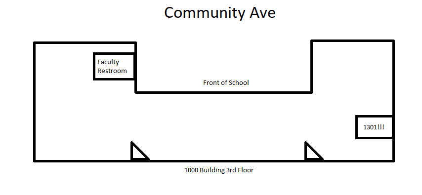
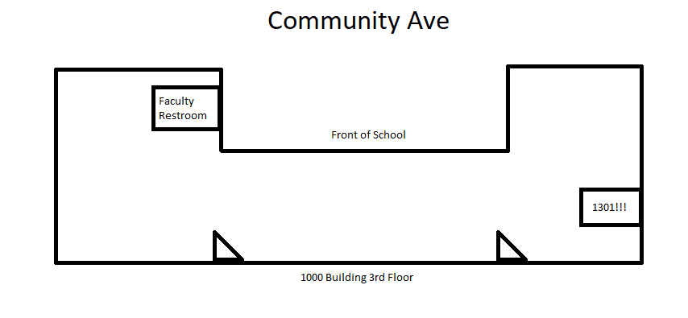

Hello friend! Updated last at: 3:09am - 1/26/2022
Thank you for your help and for substituing for my class!
If you have questions or need me, feel free to email me at jpoole@gusd.net or ask a student to direct message me on Discord.
Attendance
At first glance, my class can be a little confusing. There are 3 different classes being taught.
That means 3 different attendance sheets per period.
The following are my periods:
Period 1: Applied Computer Programming, AP Computer Science, Honors Software Internship
Period 2: Applied Computer Programming, AP Computer Science, Honors Software Internship
Period 3: Applied Computer Programming, AP Computer Science, Honors Software Internship
Period 4: AP Computer Science, Honors Software Internship
Lunch
Period 5: Prep, relax :D
Period 6: Applied Computer Programming, Honors Software Internship
Period 7: Robotics
Seating Chart if you need it.
Classwork
Computer Science Students will be working on the following this period:
1. Working on labs
2. Working on homework
3. Studying for quizzes
Robotics Students will be working on the following this period:
1. Updating their Website
2. Researching for their design project
3. Colin, continue to build his website and add more features to it.
Generally, students should be pretty well behaved and should be working on their labs. You can ask Super AP's (aka honors students) to help the class out when needed. They're a really good resource for other students when they're stuck on problems.
Students may be on their phones during class and I'm generally fine with that. If anything, you're welcome to remind them to work on labs to keep pushing forward in content.
References
1. Dr. Greg Neat is in 8102, feel free to call him or ask him for help. He's the other Computer Science teacher.
2. Map of the 1000 building, restrooms shown, staff lounge shown.


2. Map of the 1000 building, restrooms shown, staff lounge shown.
